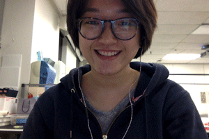

Kendra is a designer and fine artist based in Providence, Rhode Island. She is currently a junior in Graphic Design at RISD, and can usually be found lurking by her studio desk in the design center, as seen below.
Born in Shanghai, China, Kendra grew up in sunny island Singapore and is currently pursuing her passion for the arts in the United States. Her work focuses on social perception, psychological states, language and communication, as well as mankind's relationship with technology, especially when it comes to thought experiments about a hypothetical future. In her spare time, Kendra reads about psychology and the universe, plays musical instruments badly, draws or writes freely to capture her thoughts, and hopes to author meaningful books some day. Through design, she hopes to play a part in shaping the future of social exchange and information navigation in an increasingly connected yet divisive world.
Kendra has worked with China Fashion Designers Association as part of the organizing committee for the 2014 Beijing Mercedes-Benz China Fashion Week, and interned with Zimplistic Inventions Pte Ltd. and RISD Media Group over the past two summers. Since last November, she is also involved in the Brown-RISD Better World by Design committee as a member of the Design team for 2017.